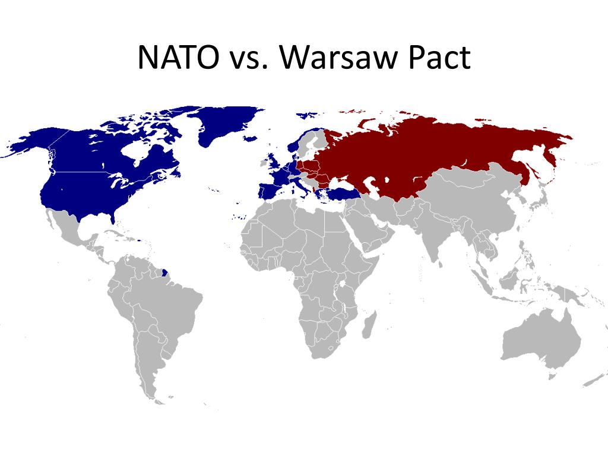
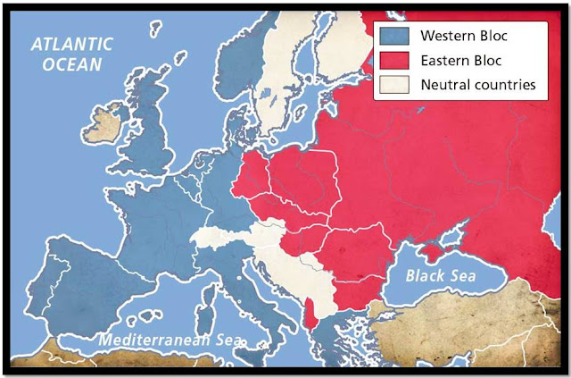
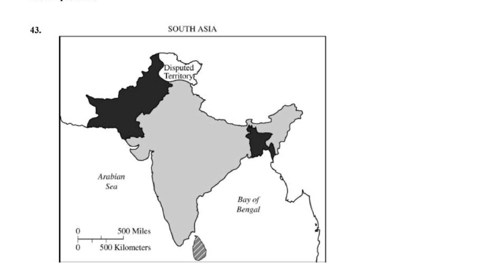
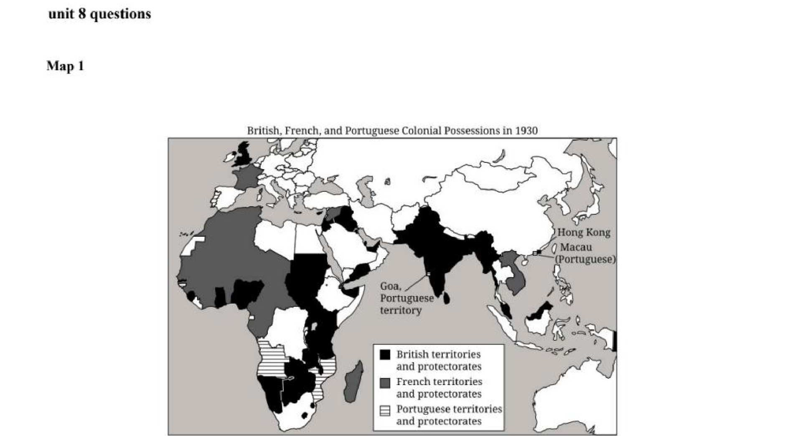
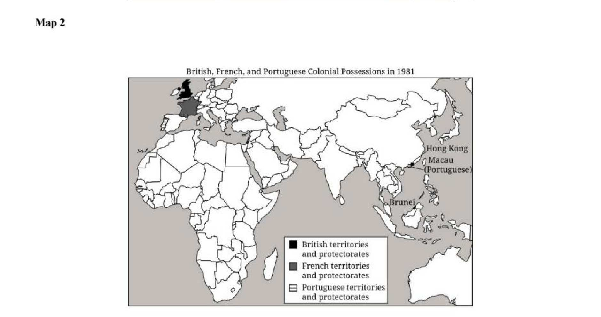

Most of these questions are not really about history. They are about decoding what is being asked. Learn the four-step habit, then watch it worked step by step on a real Unit 8 test question. Use Back and Next to move through the highlighting.
From the Iron Curtain to independence movements across Asia and Africa, master every concept and question before exam day.
Unit Overview
Cold War & the End of Empire
The end of World War II in 1945 created a world simultaneously more unified, through the United Nations, the World Bank, and global institutions, and more bitterly divided. Two superpowers, the United States and the Soviet Union, emerged from the ruins of European hegemony with fundamentally incompatible visions of political and economic order. Their ideological conflict, conducted through proxy wars, arms races, and propaganda rather than direct confrontation, defined world politics for four decades.
At the same time, WWII had fatally weakened the European colonial powers. Britain, France, Belgium, and the Netherlands could no longer project the power needed to hold their empires. Between 1945 and 1975, over 80 new nations emerged from colonial rule across Asia, Africa, the Middle East, and the Caribbean. Decolonization was rarely peaceful: it often involved brutal wars of independence, Cold War interference, and difficult nation-building in the aftermath of arbitrary colonial borders.
The Cold War ended not with a bang but a series of revolutions, the fall of the Berlin Wall in 1989, the dissolution of the Soviet Union in 1991. What followed was not the "end of history" but an uncertain multipolar world in which the questions of economic justice, environmental sustainability, and political self-determination remained deeply unresolved.
Core Themes
01
Cold War Ideology & Containment
The US pursued "containment" of Soviet communism through the Truman Doctrine, Marshall Plan, and NATO. The USSR countered with the Warsaw Pact and support for communist movements worldwide.
02
Proxy Wars & Nuclear Brinkmanship
The US and USSR avoided direct conflict but fought through proxies in Korea, Vietnam, Angola, and Afghanistan. The Cuban Missile Crisis of 1962 brought the world to the edge of nuclear annihilation.
03
Decolonization
Over 80 new nations emerged between 1945–1975, often after violent independence struggles. India (1947), Ghana (1957), Algeria (1962), and Vietnam (1975) represent different paths: from negotiation to armed revolution.
04
Non-Aligned Movement
Many newly independent nations refused to align with either superpower. The Bandung Conference (1955) launched the Non-Aligned Movement, the Global South asserting its right to chart its own political and economic path.
05
Social & Civil Rights Movements
The postwar era saw major civil rights movements (US Civil Rights, South African anti-apartheid) and feminist movements challenging hierarchies of race and gender within both superpowers and newly independent states.
06
End of the Cold War
Gorbachev's reforms (glasnost, perestroika) weakened Soviet control. The 1989 revolutions swept Eastern Europe; the Soviet Union dissolved in 1991. The bipolar world order ended almost overnight.
Interactive Reference Map
A World Split in Two
Compare the Cold War blocs, the Non-Aligned Movement, and the proxy wars, then layer on decolonization dates, the Iron Curtain, Cold War crises, and the migrations of partition and the end of empire. Click anything to read more.
AP-authentic questions using primary sources, speeches, and documents from Unit 8. Choose Quick Check for instant feedback, or Test Mode to answer a full set, rate your confidence, and reveal your score at the end, closer to real exam conditions.
Maps are primary sources. Each one encodes choices about power, borders, and ideology, who drew the line, why there, and what it left out are AP-worthy questions every time.
NATO vs. Warsaw Pact: The Military Geography of the Cold War
Map of Cold War alliance blocs in Europe, post-1955, standard cartographic publication

🗺
Add image to
images/maps/nato-warsaw.jpg
'">
NATO (North Atlantic Treaty Organization) was founded in 1949; the Warsaw Pact formed in 1955 as the Soviet response when West Germany joined NATO. The two alliances faced each other across a militarized frontier in central Europe. Both operated on Article 5-style collective defense logic: an attack on one member is an attack on all. The map shows the geographic distribution of member states, with a crucial detail, neutral nations in between.
What This Map Reveals
1
Germany was the Cold War's geographic center of gravity. Divided into West Germany (NATO) and East Germany (Warsaw Pact), Germany sat at the exact fault line. Berlin: deep inside East Germany: was the most dangerous flashpoint: a Western island surrounded by Soviet-aligned territory, blockaded in 1948 and walled in 1961.
2
Neutral nations reveal the limits of bipolar logic. Sweden, Finland, Austria, Switzerland, and Yugoslavia appear on neither side. Yugoslavia's neutrality is especially significant, Tito broke with Stalin in 1948, showing that communist states could resist Soviet control. The Non-Aligned Movement's logic had a European precedent.
3
NATO's geographic advantage was asymmetric. NATO included the United States and Canada, nations unreachable by Soviet conventional forces. The Warsaw Pact's strength was concentrated in continental Europe. The map shows why nuclear weapons were central to Soviet strategy: they were the only way to threaten the American homeland.
AP Exam Focus
NATO/Warsaw Pact questions test your understanding of how alliances structured Cold War conflict. Key contrasts: NATO was a voluntary alliance of democracies; Warsaw Pact members were Soviet satellites with limited sovereignty (see: Hungary 1956, Czechoslovakia 1968, Soviet invasion to enforce bloc loyalty). The dissolution of the Warsaw Pact in 1991 and NATO's survival frames questions about post-Cold War order.
Topic 8.11946–1989
East vs. West: Europe Divided by the Iron Curtain
Map of divided Europe showing Soviet and Western spheres, Cold War era, standard reference map

🗺
Add image to
images/maps/iron-curtain.jpg
'">
Churchill named it the "Iron Curtain" in his 1946 Fulton speech: "From Stettin in the Baltic to Trieste in the Adriatic, an iron curtain has descended across the Continent." The map shows the political and military division of Europe that defined the Cold War for 44 years. Western Europe (US sphere) was capitalist and democratic; Eastern Europe (Soviet sphere) was communist and authoritarian. The division was formalized at Yalta (1945) and hardened through the late 1940s.
What This Map Reveals
1
The division was the result of military geography, not elections. Soviet forces liberated Eastern Europe from Nazi occupation and simply stayed. The Iron Curtain ran where the Red Army stopped in May 1945. The map is a picture of where two armies met, and a reminder that the postwar order was imposed by force as much as by diplomacy.
2
Berlin was an anomaly that made the Cold War dangerous. The map shows Berlin surrounded by Soviet-controlled East Germany, yet divided into four occupation zones. This geographic absurdity produced the Berlin Blockade (1948), the Berlin Airlift, the Berlin Wall (1961), and crises that brought the superpowers close to confrontation repeatedly.
3
The line moved once in 44 years. When the Berlin Wall fell in November 1989 and Germany reunified in 1990, the Iron Curtain disappeared, almost overnight. The speed of 1989 shows how artificial the division had been: it was maintained by Soviet military force, and when Gorbachev signaled he wouldn't intervene, the entire structure collapsed within months.
AP Exam Focus
Questions about this map connect to Cold War origins (Yalta, Soviet expansion), containment (why the U.S. drew the line), and Cold War end (why the line disappeared in 1989–91). Churchill's "Iron Curtain" speech is a frequently tested document, link the rhetorical image to the geographic reality shown on the map, and note that Churchill was out of power when he gave it, speaking as a private citizen trying to shape American policy.
Topic 8.6August 1947
The Partition of British India, 1947
Map depicting the Radcliffe Line, partition of British India into India and Pakistan, August 14–15, 1947

On August 14–15, 1947, British India was partitioned into two independent nations: India and Pakistan (which included what is now Bangladesh as East Pakistan). The Radcliffe Line: drawn by Sir Cyril Radcliffe, a British lawyer who had never visited India, divided Punjab and Bengal along religious lines. The decision was made in 73 days. The result: one of history’s largest forced migrations (10–15 million people) and communal violence that killed between 200,000 and 2 million.
What This Map Reveals
1
The line cut through communities, not just territories. Punjab and Bengal had mixed Hindu, Muslim, and Sikh populations at the village level. A line drawn on religious majorities at the district level bisected families, farms, irrigation systems, and railway lines. The map shows a clean boundary; the reality was chaos and massacre.
2
Pakistan's two halves were geographically incoherent. West Pakistan and East Pakistan (1,000 miles apart, separated by India) were united only by religion. The map reveals the structural flaw that produced the 1971 Bangladesh Liberation War, when East Pakistan broke away with Indian military support, creating a third state from the original partition.
3
Kashmir is the map’s unresolved question. Kashmir had a Muslim-majority population but a Hindu maharajah who chose to accede to India. The disputed border shown on the map (now called the Line of Control) has never been formally resolved. India and Pakistan have fought three wars over it; both possess nuclear weapons. The partition map’s unfinished business remains a live geopolitical crisis.
AP Exam Focus
AP questions on this map test decolonization's challenges: how colonial administrative structures (one unit governing diverse communities) produced post-independence crises. Connect to the POV skill: the Radcliffe map represents the colonial administrator's perspective, clean lines, no villages, no people. Compare to the African decolonization maps below for a pattern: in both cases, European-drawn borders created artificial states.
Topic 8.61930 vs. 1981
Decolonization of Africa: 1930 and 1981
Left: European colonial possessions in Africa, 1930, Right: Independent African nation-states, 1981, Historical atlas

Africa, 1930, Colonial

Africa, 1981, Independent
In 1930, virtually all of Africa was colonized by European powers: Britain, France, Belgium, Portugal, Italy, and Spain. Only Ethiopia and Liberia were independent. By 1981, over 50 sovereign African nations existed, nearly all created between 1956 and 1975, with 1960 alone producing 17 new nations ("the Year of Africa"). The transformation happened within a single human lifetime.
What This Map Reveals
1
Colonial borders became national borders. Compare the 1930 and 1981 maps carefully: the internal boundaries between colonial territories became the borders of independent nations. These lines were drawn at the 1884–85 Berlin Conference by European powers who knew nothing of African ethnic, linguistic, or political geography. The new African states inherited borders that cut across over 177 ethnic and linguistic boundaries, a structural source of post-independence conflict.
2
The pace of decolonization was uneven and reveals different causes. British and French colonies mostly became independent through negotiated transfer in the late 1950s–early 1960s. Portuguese colonies (Angola, Mozambique) held out until the 1970s, because Portugal was a fascist dictatorship with no domestic pressure to decolonize. The timing on the map tells you about the political will (and capacity) of each colonial power.
3
The 1981 map shows formal sovereignty, not actual independence. Political maps show which flag flies over a capital. They don’t show neo-colonial economic relationships: many African nations exported raw materials to former colonial powers, imported manufactured goods, and carried debts denominated in European currencies. Formal decolonization and genuine self-determination were not the same thing, which is exactly what the Pan-African and Non-Aligned movements argued.
AP Exam Focus
This two-map set is a classic AP stimulus format. Expect questions asking what drove the transformation (World War II's weakening of European empires + African nationalist movements + Cold War superpower pressure), what challenges the new states faced (colonial border legacy, economic dependency, Cold War proxy interference), and sourcing questions: note that historical atlases are produced for Western educational audiences, the before/after format frames decolonization as a completed success story rather than an ongoing struggle.
Fly Sputnik low over the Earth, past the Moon, and into deep space, dodging asteroids, space junk, and rocket stages, then switch into the orbit with the right answer at each checkpoint gate. Catch shields, coin magnets, and the booster burn; three wrong gates and the mission is over.
Don’t just name the source feature, explain why it matters. Practice the “since it was written by a… it may therefore…” move on documents from the DBQ on communism in the USSR and China, then compare to the model.